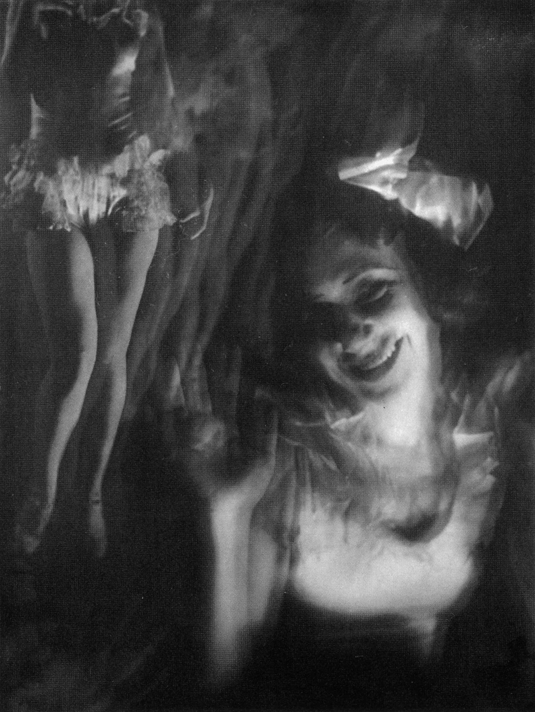

顔だけでは終わらない写真。
右の顔から左へ目を移すと、脚の断片が見えます。人物を整った一つの姿として見せないところが、見る人を立ち止まらせます。
作品・制作の例4件を紹介しています。実作品画像1点、参照・関連画像0点。画像の収集は継続中です。
写真表現をめぐる運動
新興写真
いつも見る町も、真上から撮ったり、近づいて一部を切り取ったりすると、違って見えます。新興写真は、カメラならではの見方を探した写真の動きです。絵画に似せるだけではない表現を、写真家たちが試しました。
実作品を見る

画像を表示できませんでした。下の出典ページで確認できます。
中山岩太（なかやま・いわた） / 1932年
右の顔から左へ目を移すと、脚の断片が見えます。人物を整った一つの姿として見せないところが、見る人を立ち止まらせます。
中山岩太《・・・・》1932年。機械的スキャン：HinokisOfRoma / Wikimedia Commons、Public domain（PD-Japan-oldphoto、PD-scan）。
出典で作品・資料を見る ↗Public domain / PD-Japan-oldphoto + PD-scan
Commons個別ページでPD-Japan-oldphoto表示。1932年11月『光画』初出の写真で、日本旧写真保護期間が1970年までに満了し、米国URAA復活対象外とする根拠を記載。
1998年刊『日本の写真家7 中山岩太』からの機械的なスキャン。Commons個別ページはPD-scanと表示しています。書籍全体の自由利用を意味しません。
原画像を切り取らずに掲載しています。
すべての法域に対する権利保証ではありません。米国での同時公表等の例外に注意。
画像の利用条件 ↗全体を残した縮小とWebP変換。色や構図は変更していません。
写真
人物の切り取り方を通じて、絵画のような写真から、カメラ固有の表現へ向かう変化を考えられます。
作品・資料の出典を見る ↗作品名（出典表記）：細川ちか子氏
野島康三（のじま・やすぞう） / 1932年 / 写真
同名の所蔵個体があるため、掲載時には作品番号・プリントを一つに固定する必要があります。
写真集
鉄や機械的な建造物を撮った写真集です。構造の見せ方と、本の中で写真を並べる工夫を一緒に考えられます。
作品・資料の出典を見る ↗作品名（出典表記）：『カメラ・眼×鉄・構成』
堀野正雄（ほりの・まさお） / 1932年刊 / 写真集
この作品一つで、すべての活動を代表するわけではありません。
グラフ・モンタージュ
『中央公論』のために写真を組み合わせ、東京の性格を表そうとした仕事です。複数の写真と批評が協力する点が重要です。
作品・資料の出典を見る ↗作品名（出典表記）：大東京の性格
堀野正雄（写真）・板垣鷹穂（いたがき・たかほ）（共同制作） / 1931年10月号掲載 / グラフ・モンタージュ
この作品一つで、すべての活動を代表するわけではありません。
写真
笑う人物と、左に見える脚の断片が一つの画面に重なります。顔だけを見るときと、周囲まで見るときで印象が変わる写真です。
作品・資料の出典を見る ↗作品名（出典表記）：・・・・
中山岩太（なかやま・いわた） / 1932年 / 写真
1932年11月『光画』掲載作。後年の書籍に載った画像の機械的スキャンを使用し、現存プリントの所有権とは区別します。
1930年には木村専一（きむら・せんいち）を中心に新興写真研究会ができ、堀野正雄や渡辺義雄（わたなべ・よしお）らが参加しました。
1932–33年の雑誌『光画』も、新しい写真を発表する場になりました。
これは一つの団体だけを指す言葉ではなく、各地の写真家や雑誌がつくった大きな流れです。
白黒写真では、黒から白までの違いと、光がつくる輪郭に注目します。白黒であるだけでは、新興写真とは判断できません。
雑誌や写真集では、写真と見出しの組み合わせも大切です。写真一枚と、編集されたページは分けて見ます。
《細川ちか子氏》のような人物写真では、どこまでを画面に入れ、何を外したかに注目します。切り取り方を変えると、印象も変わります。
「大東京の性格」は、複数の写真を組み合わせるグラフ・モンタージュです。一枚だけでは伝わらない町の姿を、並べ方でどう見せるかを考えます。
絵のような質感を求めた芸術写真との違いを見るときも、写真家を一生同じ作風に固定しません。野島康三のように、つくり方が変化した人もいます。
スマートフォンの写真でも、立つ場所や切り取り方が変わると印象が変わります。何を見せたいかを決めて撮り、同じ場所の写真を比べてみましょう。
選んだ作品と資料から入るための紹介です。全作家・全時期を網羅するものではありません。
作品・制作の例4件を紹介しています。実作品画像1点、参照・関連画像0点。画像の収集は継続中です。